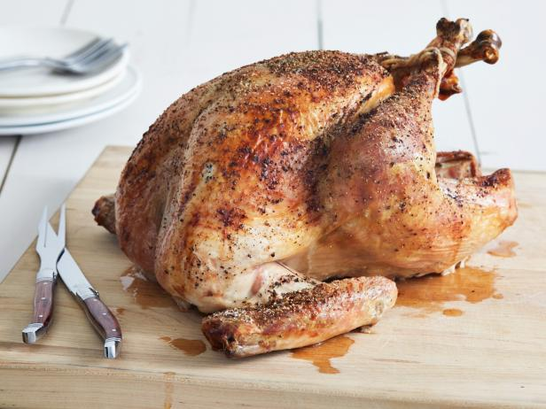

Turkey meat, commonly referred to as just turkey, is the meat from turkeys, typically domesticated turkeys but also wild turkeys.
It is a popular poultry dish, especially in North America,
where it is traditionally consumed as part of culturally significant events such as Thanksgiving and Christmas, as well as in standard cuisine.
Clickhere to go back to main page